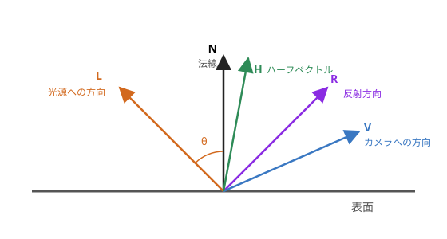

第 10 章 ライティング
物体に光が当たったときの明るさを計算することを、ライティングと呼びます。ライティングによって陰影が付くと、物体の立体感がはっきりします。この章では、シェーダーでよく使われる基本的なライティングのモデルを説明します。
ライティングに使うベクトル
ライティングの計算では、表面上の点について、次の単位ベクトル（長さが 1 のベクトル）を使います。


ライティングに使うベクトル
記号 |
内容 |
|---|---|
\(N\) |
法線。表面に垂直で、外側を向くベクトルです。 |
\(L\) |
表面から光源へ向かうベクトルです。 |
\(V\) |
表面からカメラ（視点）へ向かうベクトルです。 |
\(R\) |
光が表面で反射する方向のベクトルです。 |
\(H\) |
\(L\) と \(V\) のちょうど中間の方向を向くベクトル（ハーフベクトル）です。 |
本書のサンプルでは、光源は十分に遠くにあり、どの点から見ても同じ方向にあるものとします（平行光源）。太陽の光がこれにあたります。この場合、\(L\) はすべての点で同じです。
法線と法線行列
法線は、頂点属性として頂点ごとに与えます。物体を回転させると、法線も一緒に回転させる必要があります。
位置はモデル行列で変換しますが、法線を同じ行列で変換すると、正しい結果にならない場合があります。例えば、球を x 方向だけに引き伸ばすと、表面の傾きは緩やかになりますが、法線を同じように x 方向に引き伸ばすと、法線は表面に垂直ではなくなってしまいます。
法線を正しく変換するには、モデル行列の左上 3 × 3 の部分 \(M_3\) の逆行列の転置を使います。これを法線行列と呼びます。
モデル行列が回転と、すべての方向に等しい拡大縮小だけからなる場合は、法線行列と \(M_3\) の向きの変え方は同じになります。そのため、法線行列が必要になるのは、方向によって拡大率が異なる場合です。
法線行列は物体ごとに一定なので、サンプル 07 では JavaScript で計算し、uniform 変数で渡しています。
vNormal = uNormalMatrix * aNormal;
GLSL の transpose(inverse(mat3(uModel))) でも計算できますが、頂点ごとに同じ逆行列を計算することになるので、効率がよくありません。
注釈
補間された法線は、長さが 1 とは限りません。フラグメントシェーダーでは、法線を normalize で正規化し直してから使います。
環境光
環境光は、周囲の物体に反射して間接的に届く光を、一定の明るさで近似したものです。光が直接当たらない部分が真っ黒になるのを防ぎます。物体の色を \(C\)、環境光の強さを \(k_a\) とすると、次のようになります。
拡散反射（Lambert の余弦則）
拡散反射は、表面に当たった光が、すべての方向に均等に散らばる反射です。紙や布のようなつやのない表面は、主に拡散反射で見えています。
表面に斜めに光が当たると、同じ量の光がより広い面積に広がるので、表面は暗くなります。光の方向と法線のなす角を θ とすると、明るさは \(\cos\theta\) に比例します。これを Lambert の余弦則と呼びます。\(N\) と \(L\) が単位ベクトルなら \(\cos\theta = N \cdot L\) なので、光源の色を \(C_L\) とすると、拡散反射の明るさは次のようになります。
\(N \cdot L\) が負になるのは、表面が光源と反対の方向を向いている場合です。その場合は光が当たらないので、max で 0 にします。
float diffuse = max(dot(N, L), 0.0);
color += diffuse * uBaseColor * LIGHT_COLOR;
拡散反射の明るさは、見る方向（\(V\)）によらない点が特徴です。
鏡面反射
鏡面反射は、つやのある表面で、光が鏡のように特定の方向に反射する成分です。光源が映り込んだ明るい部分（ハイライト）として見えます。
Phong の反射モデル
Phong の反射モデルでは、光の反射方向 \(R\) とカメラの方向 \(V\) が近いほど明るくなると考えます。
\(k_s\) は鏡面反射の強さ、\(\alpha\) は光沢度です。\(\alpha\) が大きいほど、ハイライトは小さく鋭くなり、つやのある表面に見えます。\(R\) は、GLSL の reflect 関数で reflect(-L, N) として求められます。reflect の第 1 引数は「表面に入ってくる方向」なので、表面から光源へ向かう \(L\) の符号を反転して渡します。
Blinn-Phong の反射モデル
Blinn-Phong の反射モデルでは、反射方向の代わりにハーフベクトル \(H\) を使います。
Phong のモデルでは、\(R\) と \(V\) のなす角が 90 度を超えると、鏡面反射の成分が急に 0 になり、ハイライトの縁が不自然に切れることがあります。Blinn-Phong のモデルでは、この問題が起こりにくくなります。そのため、現在では Blinn-Phong のモデルのほうがよく使われます。なお、同じ \(\alpha\) では Blinn-Phong のハイライトのほうが大きくなるため、同程度の見た目にするには、Phong の 2〜4 倍程度の \(\alpha\) を指定します。
注釈
サンプル 07 では、光が当たっていない面（\(N \cdot L \leq 0\)）では、鏡面反射の計算をしないようにしています。これを省くと、影になっている側にハイライトが現れることがあります。
ライティングの合成
環境光、拡散反射、鏡面反射を足し合わせたものが、最終的な色になります。
サンプル 07：ライティング
ブラウザーで開く／ダウンロード／シェーダー：07_lighting.vert、07_lighting.frag
#version 300 es
layout(location = 0) in vec3 aPosition; // モデル座標での位置
layout(location = 1) in vec3 aNormal; // モデル座標での法線
uniform mat4 uModel;
uniform mat4 uView;
uniform mat4 uProjection;
uniform mat3 uNormalMatrix; // 法線をワールド座標へ変換する行列
out vec3 vWorldPosition; // ワールド座標での位置
out vec3 vNormal; // ワールド座標での法線
void main() {
vec4 worldPosition = uModel * vec4(aPosition, 1.0);
vWorldPosition = worldPosition.xyz;
vNormal = uNormalMatrix * aNormal;
gl_Position = uProjection * uView * worldPosition;
}
#version 300 es
precision highp float;
in vec3 vWorldPosition;
in vec3 vNormal;
uniform vec3 uLightDirection; // 物体から光源へ向かう方向（ワールド座標）
uniform vec3 uCameraPosition; // カメラの位置（ワールド座標）
uniform vec3 uBaseColor; // 物体の色
uniform float uShininess; // 光沢度：大きいほどハイライトが小さく鋭くなる
uniform bool uUseAmbient;
uniform bool uUseDiffuse;
uniform bool uUseSpecular;
uniform bool uUseBlinnPhong; // true：Blinn-Phong、false：Phong
uniform bool uUseGamma;
out vec4 outColor;
const vec3 LIGHT_COLOR = vec3(1.0); // 光源の色
const float AMBIENT_STRENGTH = 0.15; // 環境光の強さ
const float SPECULAR_STRENGTH = 0.6; // 鏡面反射の強さ
void main() {
// 補間された法線は長さが 1 とは限らないので、正規化し直す
vec3 N = normalize(vNormal);
vec3 L = normalize(uLightDirection);
vec3 V = normalize(uCameraPosition - vWorldPosition); // 表面からカメラへ向かう方向
vec3 color = vec3(0.0);
// 環境光：周囲からの間接的な光を一定の明るさで近似する
if (uUseAmbient) {
color += AMBIENT_STRENGTH * uBaseColor;
}
// 拡散反射（Lambert）：光が当たる角度が浅いほど暗くなる
float diffuse = max(dot(N, L), 0.0);
if (uUseDiffuse) {
color += diffuse * uBaseColor * LIGHT_COLOR;
}
// 鏡面反射：光源の反射方向とカメラの方向が近いほど明るい（光が当たっている面だけ）
if (uUseSpecular && diffuse > 0.0) {
float specular;
if (uUseBlinnPhong) {
vec3 H = normalize(L + V); // ハーフベクトル
specular = pow(max(dot(N, H), 0.0), uShininess);
} else {
vec3 R = reflect(-L, N); // 光の反射方向
specular = pow(max(dot(R, V), 0.0), uShininess);
}
color += SPECULAR_STRENGTH * specular * LIGHT_COLOR;
}
// ガンマ補正：線形な明るさを、ディスプレイ向けの値に変換する（近似）
if (uUseGamma) {
color = pow(color, vec3(1.0 / 2.2));
}
outColor = vec4(color, 1.0);
}
サンプル 07 では、次のことを確かめられます。
環境光、拡散反射、鏡面反射を 1 つずつ表示して、それぞれの成分の見え方を確かめる。
光沢度を変えて、ハイライトの大きさの変化を確かめる。また、Phong と Blinn-Phong を切り替えて、ハイライトの形の違いを比べる。
「法線行列を使う」を外すと、法線の変換にモデル行列の左上 3 × 3 の部分がそのまま使われます。X 方向の拡大率を 1 以外にしたときに、陰影が不自然になることを確かめる。
頂点単位とフラグメント単位のライティング
ライティングの計算は、頂点シェーダーで行うこともできます。頂点シェーダーで頂点ごとに明るさを計算し、その結果を補間する方法を、Gouraud シェーディングと呼びます。フラグメントシェーダーで法線を補間してからフラグメントごとに計算する方法を、Phong シェーディングと呼びます。Phong シェーディングは法線を補間する方法の名前で、前述の Phong の反射モデルとは別のものです。どちらのシェーディングでも、反射モデルには Blinn-Phong などを組み合わせて使います。
項目 |
Gouraud シェーディング |
Phong シェーディング |
|---|---|---|
計算する場所 |
頂点シェーダー |
フラグメントシェーダー |
計算量 |
少ない（頂点の数だけ） |
多い（フラグメントの数だけ） |
見た目 |
頂点の少ない形では、ハイライトがぼやけたり欠けたりする |
頂点が少なくても、ハイライトがなめらか |
GPU の性能が十分に高くなった現在では、フラグメント単位で計算するのが一般的です。サンプル 07 もフラグメント単位で計算しています。
ガンマ補正
ライティングの計算は、光の量に比例した「線形」な値で行うのが正しい方法です。一方、一般的なディスプレイは、出力された値 \(c\) に対して、おおよそ \(c^{2.2}\) に比例する明るさで表示します（sRGB）。線形な値をそのまま出力すると、中間の明るさが暗く表示されてしまいます。
そこで、出力の直前に、ディスプレイの特性の逆の変換を行います。これをガンマ補正と呼びます。
color = pow(color, vec3(1.0 / 2.2));
注釈
正確な sRGB の変換式は、べき乗だけの式とは少し異なります。また、テクスチャの画像のように sRGB で保存された色を計算に使う場合は、先に \(c^{2.2}\) で線形な値に戻してから計算する必要があります。WebGL 2.0 では、SRGB8_ALPHA8 形式のテクスチャを使うと、この変換を GPU に任せることもできます。
点光源
電球のように、特定の位置から全方向に光を出す光源を点光源と呼びます。点光源の場合は、\(L\) を点ごとに計算し、光源からの距離 \(d\) に応じて光を弱めます（減衰）。
vec3 toLight = uLightPosition - vWorldPosition;
float d = length(toLight);
vec3 L = toLight / d; // 正規化
float attenuation = 1.0 / (1.0 + 0.1 * d * d); // 距離の 2 乗に応じて弱める
color += attenuation * max(dot(N, L), 0.0) * uBaseColor * LIGHT_COLOR;
物理的には、光の強さは距離の 2 乗に反比例します。上の式の分母の 1.0 は、光源のごく近くで値が大きくなりすぎるのを防ぐためのものです。